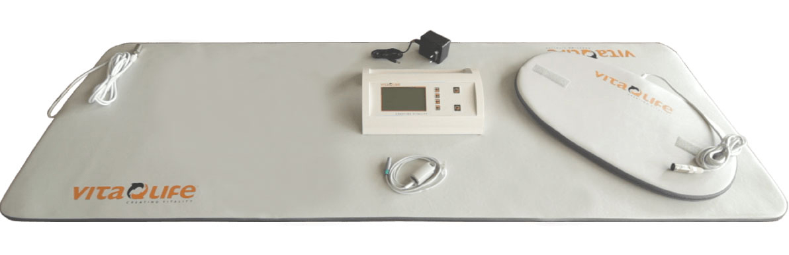
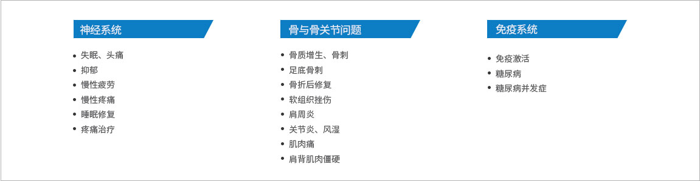
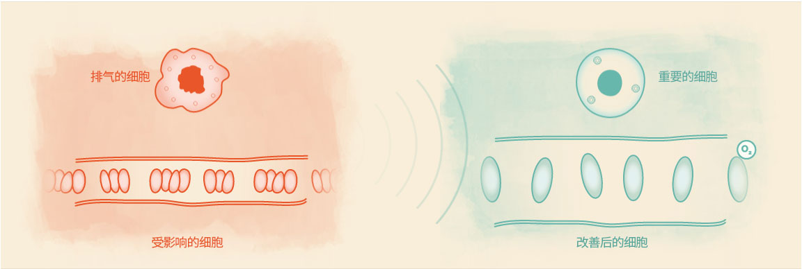

完整疗愈健康管理中心
通过生物电，生物共振，能量学，心理等方法，综合对客人进行细胞层面的保养，尤其是线粒体ATP层面上的保养。
人由数万亿细胞调节所有身体功能组成。细胞无处不在：在血液里，在心脏里，在肌肉里，在大脑里，在神经里，在皮肤里。每一次呼吸，每一个动作，身体内部的每一个动作都取决于细胞。细胞代谢是一个复杂的过程，可以通过磁共振刺激来支持。
经德国科学家30年生物医学研究，发现脉冲磁场所产生的共振能量可以有效的给予人体细胞膜电位的调整，促进细胞离子交换的效率。动态的定向脉冲磁场直接作用于人体血液中血红蛋白内的铁物质。改变其磁极性分布，使血细胞得到相应的磁化，进而改善、促进了体内的血液循环和营养物的交换及供应，促进免疫的活化，诱导自我修复机制的启动，诱导成骨细胞的生长。
磁共振治疗内容
磁共振治疗作用
磁共振治疗定制流程
临床意义